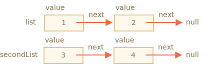

让我们回到函数，进行更深入的研究。
我们的第一个主题是 递归（recursion）。
如果你不是刚接触编程，那么你可能已经很熟悉它了，那么你可以跳过这一章。
递归是一种编程模式，在一个任务可以自然地拆分成多个相同类型但更简单的任务的情况下非常有用。或者，在一个任务可以简化为一个简单的行为加上该任务的一个更简单的变体的时候可以使用。或者，就像我们很快会看到的那样，处理某些数据结构。
当一个函数解决一个任务时，在解决的过程中它可以调用很多其它函数。在部分情况下，函数会调用 自身。这就是所谓的 递归。
简单起见，让我们写一个函数 pow(x, n)，它可以计算 x 的 n 次方。换句话说就是，x 乘以自身 n 次。
pow(2, 2) = 4
pow(2, 3) = 8
pow(2, 4) = 16有两种实现方式。
迭代思路：使用 for 循环：
function pow(x, n) {
let result = 1;
// 再循环中，用 x 乘以 result n 次
for (let i = 0; i < n; i++) {
result *= x;
}
return result;
}
alert( pow(2, 3) ); // 8递归思路：简化任务，调用自身：
function pow(x, n) {
if (n == 1) {
return x;
} else {
return x * pow(x, n - 1);
}
}
alert( pow(2, 3) ); // 8请注意，递归变体在本质上是不同的。
当 pow(x, n) 被调用时，执行分为两个分支：
if n==1 = x
/
pow(x, n) =
\
else = x * pow(x, n - 1)n == 1，所有事情都会很简单，这叫做 基础 的递归，因为它会立即产生明显的结果：pow(x, 1) 等于 x。x * pow(x, n - 1) 表示 pow(x, n)。在数学里，可能会写为 xn = x * xn-1。这叫做 一个递归步骤：我们将任务转化为更简单的行为（x 的乘法）和更简单的同类任务的调用（带有更小的 n 的 pow 运算）。接下来的步骤将其进一步简化，直到 n 达到 1。我们也可以说 pow 递归地调用自身 直到 n == 1。
比如，为了计算 pow(2, 4)，递归变体经过了下面几个步骤：
pow(2, 4) = 2 * pow(2, 3)pow(2, 3) = 2 * pow(2, 2)pow(2, 2) = 2 * pow(2, 1)pow(2, 1) = 2因此，递归将函数调用简化为一个更简单的函数调用，然后再将其简化为一个更简单的函数，以此类推，直到结果变得显而易见。
递归解通常比迭代解更短。
在这儿，我们可以使用条件运算符 `?` 而不是 `if` 语句，从而使 `pow(x, n)` 更简洁并且可读性依然很高：
```js run
function pow(x, n) {
return (n == 1) ? x : (x * pow(x, n - 1));
}
```最大的嵌套调用次数（包括首次）被称为 递归深度。在我们的例子中，它正好等于 n。
最大递归深度受限于 JavaScript 引擎。对我们来说，引擎在最大迭代深度为 10000 及以下时是可靠的，有些引擎可能允许更大的最大深度，但是对于大多数引擎来说，100000 可能就超出限制了。有一些自动优化能够帮助减轻这种情况（尾部调用优化），但目前它们还没有被完全支持，只能用于简单场景。
这就限制了递归的应用，但是递归仍然被广泛使用。有很多任务中，递归思维方式会使代码更简单，更容易维护。
现在我们来研究一下递归调用是如何工作的。为此，我们会先看看函数底层的工作原理。
有关正在运行的函数的执行过程的相关信息被存储在其 执行上下文 中。
执行上下文 是一个内部数据结构，它包含有关函数执行时的详细细节：当前控制流所在的位置，当前的变量，this 的值（此处我们不使用它），以及其它的一些内部细节。
一个函数调用仅具有一个与其相关联的执行上下文。
当一个函数进行嵌套调用时，将发生以下的事儿：
让我们看看 pow(2, 3) 调用期间都发生了什么。
在调用 pow(2, 3) 的开始，执行上下文（context）会存储变量：x = 2, n = 3，执行流程在函数的第 1 行。
我们将其描绘如下：
这是函数开始执行的时候。条件 n == 1 结果为 false，所以执行流程进入 if 的第二分支。
function pow(x, n) {
if (n == 1) {
return x;
} else {
*!*
return x * pow(x, n - 1);
*/!*
}
}
alert( pow(2, 3) );变量相同，但是行改变了，因此现在的上下文是：
为了计算 x * pow(x, n - 1)，我们需要使用带有新参数的新的 pow 子调用 pow(2, 2)。
为了执行嵌套调用，JavaScript 会在 执行上下文堆栈 中记住当前的执行上下文。
这里我们调用相同的函数 pow，但这绝对没问题。所有函数的处理都是一样的：
下面是进入子调用 pow(2, 2) 时的上下文堆栈：
新的当前执行上下文位于顶部（粗体显示），之前记住的上下文位于下方。
当我们完成子调用后 —— 很容易恢复上一个上下文，因为它既保留了变量，也保留了当时所在代码的确切位置。
在上面的图中，我们使用“行”一词作为示例，每一行只有一个子调用，但通常一行代码可能会包含多个子调用，像 `pow(…) + pow(…) + somethingElse(…)`。
因此，更准确地说，执行是“在子调用之后立即恢复”的。重复该过程：在第 5 行生成新的子调用，现在的参数是 x=2, n=1。
新的执行上下文被创建，前一个被压入堆栈顶部：
此时，有 2 个旧的上下文和 1 个当前正在运行的 pow(2, 1) 的上下文。
在执行 pow(2, 1) 时，与之前的不同，条件 n == 1 为 true，因此 if 的第一个分支生效：
function pow(x, n) {
if (n == 1) {
*!*
return x;
*/!*
} else {
return x * pow(x, n - 1);
}
}此时不再有更多的嵌套调用，所以函数结束，返回 2。
函数完成后，就不再需要其执行上下文了，因此它被从内存中移除。前一个上下文恢复到堆栈的顶部：
恢复执行 pow(2, 2)。它拥有子调用 pow(2, 1) 的结果，因此也可以完成 x * pow(x, n - 1) 的执行，并返回 4。
然后，前一个上下文被恢复：
当它结束后，我们得到了结果 pow(2, 3) = 8。
本示例中的递归深度为：3。
从上面的插图我们可以看出，递归深度等于堆栈中上下文的最大数量。
请注意内存要求。上下文占用内存，在我们的示例中，求 n 次方需要存储 n 个上下文，以供更小的 n 值进行计算使用。
而循环算法更节省内存：
function pow(x, n) {
let result = 1;
for (let i = 0; i < n; i++) {
result *= x;
}
return result;
}迭代 pow 的过程中仅使用了一个上下文用于修改 i 和 result。它的内存要求小，并且是固定了，不依赖于 n。
任何递归都可以用循环来重写。通常循环变体更有效。
……但有时重写很难，尤其是函数根据条件使用不同的子调用，然后合并它们的结果，或者分支比较复杂时。而且有些优化可能没有必要，完全不值得。
递归可以使代码更短，更易于理解和维护。并不是每个地方都需要优化，大多数时候我们需要一个好代码，这就是为什么要使用它。
递归的另一个重要应用就是递归遍历。
假设我们有一家公司。人员结构可以表示为一个对象：
let company = {
sales: [{
name: 'John',
salary: 1000
}, {
name: 'Alice',
salary: 1600
}],
development: {
sites: [{
name: 'Peter',
salary: 2000
}, {
name: 'Alex',
salary: 1800
}],
internals: [{
name: 'Jack',
salary: 1300
}]
}
};换句话说，一家公司有很多部门。
一个部门可能有一 数组 的员工，比如，sales 部门有 2 名员工：John 和 Alice。
或者，一个部门可能会划分为几个子部门，比如 development 有两个分支：sites 和 internals，它们都有自己的员工。
当一个子部门增长时，它也有可能被拆分成几个子部门（或团队）。
例如，sites 部门在未来可能会分为 siteA 和 siteB。并且，它们可能会被再继续拆分。没有图示，脑补一下吧。
现在，如果我们需要一个函数来获取所有薪资的总数。我们该怎么做？
迭代方式并不容易，因为结构比较复杂。首先想到的可能是在 company 上使用 for 循环，并在第一层部分上嵌套子循环。但是，之后我们需要更多的子循环来遍历像 sites 这样的二级部门的员工…… 然后，将来可能会出现在三级部门上的另一个子循环？如果我们在代码中写 3-4 级嵌套的子循环来遍历单个对象， 那代码得多丑啊。
我们试试递归吧。
我们可以看到，当我们的函数对一个部门求和时，有两种可能的情况：
N 个子部门的 对象 —— 那么我们可以通过 N 层递归调用来求每一个子部门的薪资，然后将它们合并起来。第一种情况是由一数组的人组成的部门，这种情况很简单，是最基础的递归。
第二种情况是我们得到的是对象。那么可将这个复杂的任务拆分成适用于更小部门的子任务。它们可能会被继续拆分，但很快或者不久就会拆分到第一种情况那样。
这个算法从代码来看可能会更简单：
let company = { // 是同一个对象，简洁起见被压缩了
sales: [{name: 'John', salary: 1000}, {name: 'Alice', salary: 1600 }],
development: {
sites: [{name: 'Peter', salary: 2000}, {name: 'Alex', salary: 1800 }],
internals: [{name: 'Jack', salary: 1300}]
}
};
// 用来完成任务的函数
*!*
function sumSalaries(department) {
if (Array.isArray(department)) { // 情况（1）
return department.reduce((prev, current) => prev + current.salary, 0); // 求数组的和
} else { // 情况（2）
let sum = 0;
for (let subdep of Object.values(department)) {
sum += sumSalaries(subdep); // 递归调用所有子部门，对结果求和
}
return sum;
}
}
*/!*
alert(sumSalaries(company)); // 7700代码很短也容易理解（希望是这样？）。这就是递归的能力。它适用于任何层次的子部门嵌套。
下面是调用图：
我们可以很容易地看到其原理：对于对象 {...} 会生成子调用，而数组 [...] 是递归树的“叶子”，它们会立即给出结果。
请注意，该代码使用了我们之前讲过的智能特性（smart features）：
arr.reduce。for(val of Object.values(obj)) 遍历对象的（属性）值：Object.values 返回它们组成的数组。递归（递归定义的）数据结构是一种部分复制自身的结构。
我们刚刚在上面的公司结构的示例中看过了它。
一个公司的 部门 是：
对于 Web 开发者而言，有更熟知的例子：HTML 和 XML 文档。
在 HTML 文档中，一个 HTML 标签 可能包括以下内容：
这又是一个递归定义。
为了更好地理解递归，我们再讲一个递归结构的例子“链表”，在某些情况下，它可能是优于数组的选择。
想象一下，我们要存储一个有序的对象列表。
正常的选择会是一个数组：
let arr = [obj1, obj2, obj3];……但是用数组有个问题。“删除元素”和“插入元素”的操作代价非常大。例如，arr.unshift(obj) 操作必须对所有元素重新编号以便为新的元素 obj 腾出空间，而且如果数组很大，会很耗时。arr.shift() 同理。
唯一对数组结构做修改而不需要大量重排的操作就是对数组末端的操作：arr.push/pop。因此，对于大队列来说，当我们必须对数组首端的元素进行操作时，数组会很慢。（译注：此处的首端操作其实指的是在尾端以外的数组内的元素进行插入/删除操作。）
如果我们确实需要快速插入/删除，则可以选择另一种叫做 链表 的数据结构。
链表元素 是一个使用以下元素通过递归定义的对象：
value。next 属性引用下一个 链表元素 或者代表末尾的 null。例如：
let list = {
value: 1,
next: {
value: 2,
next: {
value: 3,
next: {
value: 4,
next: null
}
}
}
};链表的图形表示：
一段用来创建链表的代码：
let list = { value: 1 };
list.next = { value: 2 };
list.next.next = { value: 3 };
list.next.next.next = { value: 4 };
list.next.next.next.next = null;在这儿我们可以清楚地看到，这里有很多个对象，每一个都有 value 和指向邻居的 next。变量 list 是链条中的第一个对象，因此顺着 next 指针，我们可以抵达任何元素。
该链表可以很容易被拆分为多个部分，然后再重新组装回去：
let secondList = list.next.next;
list.next.next = null;
合并：
list.next.next = secondList;当然，我们可以在任何位置插入或移除元素。
比如，要添加一个新值，我们需要更新链表的头：
let list = { value: 1 };
list.next = { value: 2 };
list.next.next = { value: 3 };
list.next.next.next = { value: 4 };
*!*
// 将新值添加到链表头部
list = { value: "new item", next: list };
*/!*要从中间删除一个值，可以修改前一个元素的 next：
list.next = list.next.next;我们让 list.next 从 1 跳到值 2。现在值 1 就被从链表中移除了。如果它没有被存储在其它任何地方，那么它会被自动从内存中删除。
与数组不同，链表没有大规模重排，我们可以很容易地重新排列元素。
当然，链表也不总是优于数组的。不然大家就都去使用链表了。
链表主要的缺点就是我们无法很容易地通过元素的编号获取元素。但在数组中却很容易：arr[n] 是一个直接引用。而在链表中，我们需要从起点元素开始，顺着 next 找 N 次才能获取到第 N 个元素。
……但是我们也并不是总需要这样的操作。比如，当我们需要一个队列甚至一个 双向队列 —— 有序结构必须可以快速地从两端添加/移除元素，但是不需要访问的元素。
链表可以得到增强：
next 之外，再添加 prev 属性来引用前一个元素，以便轻松地往回移动。tail 的变量，该变量引用链表的最后一个元素（并在从末尾添加/删除元素时对该引用进行更新）。术语：
递归 是编程的一个术语，表示从自身调用函数（译注：也就是自调用）。递归函数可用于以更优雅的方式解决问题。
当一个函数调用自身时，我们称其为 递归步骤。递归的 基础 是函数参数使任务简单到该函数不再需要进行进一步调用。
递归定义 的数据结构是指可以使用自身来定义的数据结构。
例如，链表可以被定义为由对象引用一个列表（或 null）而组成的数据结构。
list = { value, next -> list } 像 HTML 元素树或者本章中的 department 树等，本质上也是递归：它们有分支，而且分支又可以有其他分支。
就像我们在示例 sumSalary 中看到的那样，可以使用递归函数来遍历它们。
任何递归函数都可以被重写为迭代（译注：也就是循环）形式。有时这是在优化代码时需要做的。但对于大多数任务来说，递归方法足够快，并且容易编写和维护。